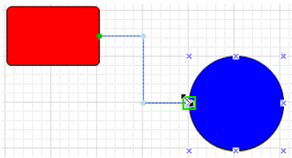
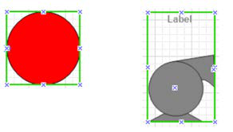
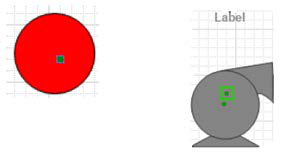
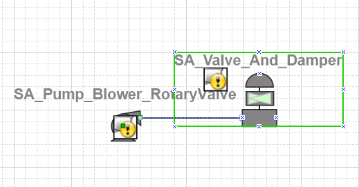
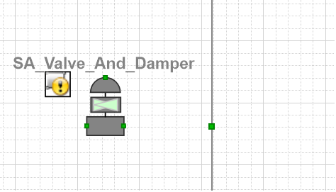
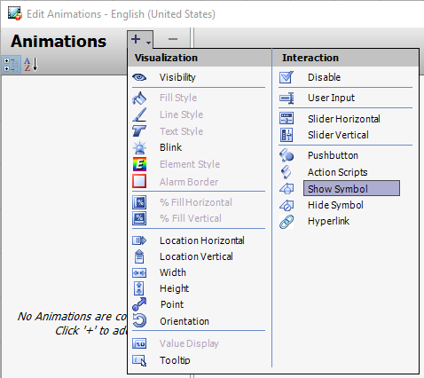
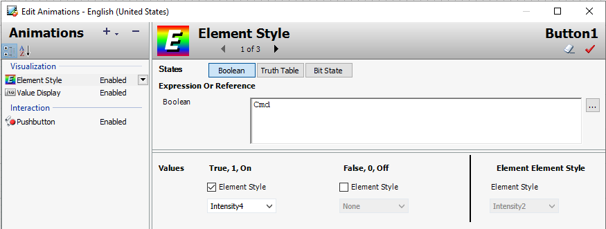
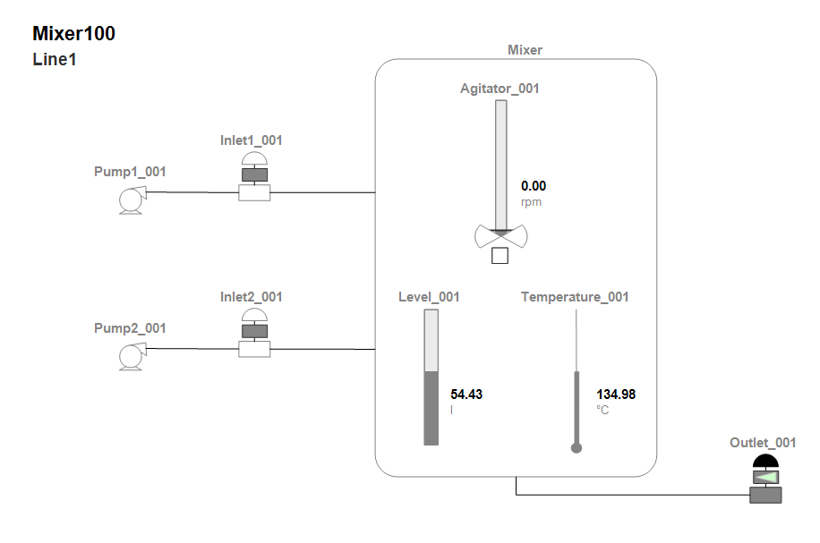
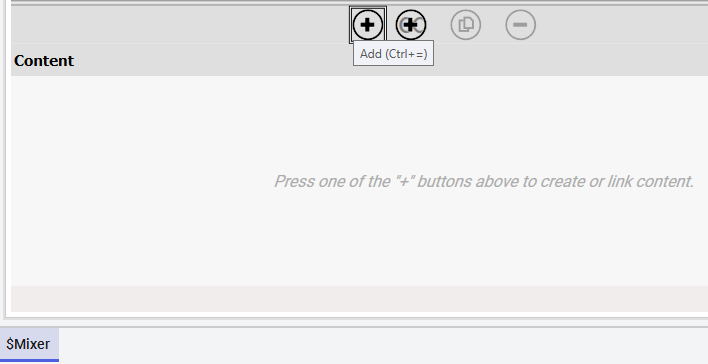
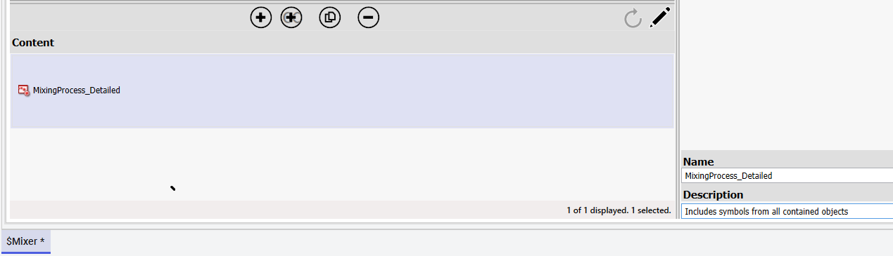

Legacy floating Tools palette toolbar showing 30 drawing and interaction tools organized in rows: selection arrow, lines, shapes, text tools, checkboxes, sliders, buttons, trend charts, and symbol factory
Module 3 — Symbols | Pages 173–180
Connectors and Connection Points
A connector is a line drawn between graphic elements. It starts at a connection point on one
graphic element and ends at a connection point on another element. Connectors are particularly
useful for complex graphics like flow diagrams, industrial piping, or electrical wiring diagrams that
incorporate many lines between graphic elements.
Connectors change length or orientation in response to changes to the connected graphic
elements during design or runtime. Graphic elements can be moved, resized, or rotated and still
maintain the connector between elements.
Connection points are the locations on a graphic element to attach a connector. A default set of
connection points appear on the bounding rectangle around a graphic element or an embedded
graphic.
You can also add custom connection points to graphic elements or embedded graphics if you want
to place a connector at a different position than on a bounding rectangle.



Draw a Connector
You can use the Connector tool to draw a connector between graphic elements.
To draw a single connector between two elements, move your mouse over the first element and
click a connection point. Then press and hold your left mouse button, drag the mouse to the
second graphic element, and release the mouse when you are over the selected connection point.
The connector appears as a line between the two elements.
If you want to draw multiple connectors, you can double-click the Connector tool. Double-clicking a
tool saves time by not requiring you to reselect the tool when using it to draw multiple elements of
the same type on the canvas one after the other. Clicking another tool or pressing the Esc key will
cancel the operation.

Add a Connection Point
You can use the Connection Point tool to place additional connection points on a graphic element.
To add a single connection point, move your mouse to a location on a graphic element where you
want to place a new connection point and click once. The new connection point appears as a
green rectangle at the location you selected.
Connection points can be added within the bounding rectangle of the hosting element of the
embedded graphic.
If you want to add multiple connection points, you can double-click the Connect tool. Double-
clicking a tool saves time by not requiring you to reselect the tool when using it to draw multiple
elements of the same type on the canvas one after the other. Clicking another tool or pressing the
Esc key will cancel the operation.


Animations
Animations can be used to change the appearance of graphic elements and allow users to interact
with the view application at runtime. Some animations can be driven by data from automation
objects, element properties, and other data sources. You configure animations with the Edit
Animations dialog box
You can use:
Visualization animations such as Visibility, Fill Style, Line Style, Text Style, Element
Style, and more.
Interaction animations such as Disable, User Input, Slider Horizontal, Slider Vertical,
Pushbutton, Action Scripts, and more.
Elements in your graphic can have one or more animations. You can disable and enable individual
animations. You can also cut, copy, and paste animations between elements. Only animations
supported by the target element are pasted. You can also substitute references and strings in
animations.
Not all animations are available for all element types. Some animations do not make logical sense,
such as line style with a text element. You cannot select or copy these invalid combinations.

Value Display Animations
For text elements, you can add Value Display animations to specify values at runtime. You can
configure it to show:
A Boolean value as a Message
An Analog value
A string value
A time or date value
The tag name, hierarchical name or contained name of the hosting object
A value based on Truth Table conditions
A value based on Bit State conditions
Disable Animation
You can enable or disable animations for an element. When you disable an animation, its
configuration is not lost. You can see each animation independently from each other.
You can also disable animations from the Animation Summary pane in the bottom-right corner of
the Graphic Editor.
Element Style Animation
You can use Element Style animations to apply element styles to an element or group of elements.
Boolean: Applies element styles based on a binary True, 1, On or False, 0, Off condition.
Truth Table: Applies element styles based on a set of evaluated values or expressions.
Bit State: Applies element styles based on bit state conditions.


Containment Relationships
Application objects can be included in a containment relationship. When working in a containment
relationship, symbols in each object can be embedded in other objects within the same
containment by using relative references. In this way, the relative references within the embedded
symbols will be resolved without further configuration.
For example, if a contained object includes a symbol that is configured using relative references
(such as Me.PV), the symbol can be embedded in a symbol of the container object.
At the template level of containment, if the container template needs to include symbols from its
contain templates, then you must add a symbol in the container template and embed the symbols
from the contained templates through relative referencing.
Element Styles
Element Styles define a set of visual properties that determine the appearance of text, lines,
graphic outlines, and interior fills shown in Industrial Graphics. They provide a means for
developers to establish consistent visual standards in their applications. When applied to a
graphic, the Element Style sets preconfigured visual property values that take precedence over the
graphic’s native visual properties.
The ElementStyle property on the Properties tab provides a list of element styles that can be
applied to graphics. For more information of Element Styles, refer to Section 8, “Galaxy Styles.”
Introduction
In this lab, you will embed graphics in a containment relationship to create a composite view of the
agitator, level, pumps, temperature, and valves in the Mixer application. You will add a symbol to
the $Mixer template that will combine the contained graphics organized to represent the entire
mixing process. To this symbol, you will also add text elements, animations, connection points,
connectors, and apply element styles.
Objectives
Upon completion of this lab, you will be able to:
Add a symbol in an automation object
Embed graphics from relative references
Configure and embed graphics within a containment relationship
Add Text elements and configure Value Display animations
Apply element styles to elements
Use connectors and connection points
Change element display order
Replace a graphic in a frame window

Create the Mixer Symbol
First, you will create a MixingProcess_Detailed symbol in the $Mixer template. This symbol will
contain the graphics you created in the previous lab for the agitator, level, pumps, temperature,
and valves.
1.
In the IDE, on the Templates tab, in the Training\Project template toolset, double-click the
$Mixer template to open it for editing.
2.
In Content, click the Add button.
3.
In Name, enter MixingProcess_Detailed.
4.
In Description, enter Includes symbols from all contained objects.


Review the sections above for the main topics, step-by-step procedures, and important configuration details.
This is part of the InTouch HMI layer, which integrates with Application Server's Galaxy for a complete visualization solution.
Module 3 — Symbols. AVEVA InTouch for System Platform 2023 Training.
Next: Lesson L16 — Lab 7 – Creating the Mixer Display